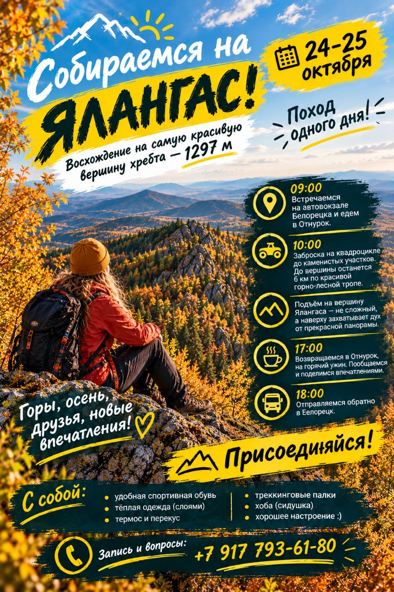

01Горы зовут
Походы в горы
Горные маршруты разного характера и продолжительности — подбираем по сезону и подготовке группы.
Южный Урал · Белорецкий район
Люди. Горы. Красота.
Путешествия, в которых важны не только вершины, но и люди рядом, вкус местной кухни и истории, которые остаются с вами.
А почувствовать место.
Мы открываем Белорецкий район и Южный Урал через горные тропы, живые встречи, местные вкусы и совместные приключения. Подбираем формат под людей — от первого похода до командного выезда.
Почему с нами спокойно ↘От первого шага на тропе до впечатлений, ради которых хочется вернуться.
Горные маршруты разного характера и продолжительности — подбираем по сезону и подготовке группы.
Маршруты и выезды с активной составляющей. Формат, нагрузка, требования к участникам и безопасность определяются для каждой программы.
Знакомство с местной кухней и гостеприимством.
Музыка, природа, авторские истории и новые знакомства.
Тимбилдинг, командные задачи и программы развития.
Активные события для детей и подростков с заранее согласованной программой, возрастом участников и мерами безопасности.
Сплавы по рекам региона: подбор формата, сезонности и логистики. Конкретная река и условия подтверждаются для каждого выезда.
Самые красивые места становятся ещё лучше, когда рядом свои люди.
Мы продумываем детали, чтобы вы могли быть внутри путешествия — а не переживать об организации.
Подбираем темп и формат, держим группу вместе и не оставляем участников без внимания.
Заранее проверяем маршрут и учитываем условия, сложность и состав группы.
Помогаем с экипировкой, логистикой и организационными вопросами.
Показываем не только красивые виды, но и людей, вкусы и истории края.
25 октября 2026 года отправляемся на Ялангас. Осталось всего два места — присоединяйтесь, пока группа не набрана.

Восхождение на вершину хребта Ялангас с панорамами Южного Урала. В афише указаны встреча в Белорецке, трансфер в Отнурок и заброска на квадроцикле до каменистого участка, после чего остаётся около 6 км по горно-лесной тропе.
Дата: 25 октября. Стоимость участия: 3 650 ₽. По состоянию на момент обновления осталось 2 места. Перед оплатой подтвердите наличие мест и условия выезда у организатора.
С собой: удобная спортивная обувь, тёплая одежда слоями, термос и перекус, треккинговые палки, сидушка. Сложность, возрастные ограничения, стоимость, точное время возвращения и условия участия необходимо уточнить у организатора.
Записаться: +7 917 793-61-80 ↗Карточки популярных мест для будущих программ. Конкретные даты, стоимость, длительность и уровень нагрузки публикуем только после подтверждения маршрута.
Причудливые скальные останцы, таёжные подходы и ощущение настоящей экспедиции. Логистику и протяжённость пешей части нужно согласовывать заранее.
Запросить программу ↗Горный массив с несколькими вершинами и видами на окрестности Белорецка. Можно проектировать разные форматы в зависимости от сезона и состава группы.
Запросить программу ↗Направление для тех, кто хочет открыть менее привычные уголки Южного Урала. Трек, подъезд и доступность уточняются при планировании выезда.
Запросить программу ↗Авторский маршрут в подборке направлений АйДа. Перед публикацией расписания проверяем трек, сезонность, состояние подъездов и ограничения территории.
Запросить программу ↗Скальные виды и горные тропы. Формат поездки, транспорт, время в пути и физическую нагрузку определяем для каждой даты отдельно.
Запросить программу ↗Открытые панорамы и каменистые участки на пути к вершине. В ближайшем анонсе предусмотрен однодневный формат с отправлением из Белорецка.
Смотреть ближайший анонс ↗Важно: карточки описывают направления, а не подтверждённые к продаже туры. Необходимо добавить реальные даты, цену, длительность, километраж, набор высоты, требования к участникам, включённые услуги и правила отмены.
Если вы никогда не ходили в походы, это не повод откладывать знакомство с Южным Уралом.
Для первого знакомства можно подобрать несложный формат. До подтверждения участия важно обсудить маршрут, длительность, набор высоты, покрытие и вашу подготовку.
Не обязательно покупать всё заранее. Расскажите о выбранном маршруте — организатор уточнит необходимый список и варианты помощи с экипировкой.
Состав услуг и стоимость должны быть указаны в описании конкретной программы до оплаты. Уточняйте отдельно транспорт, питание, размещение, входные билеты и аренду снаряжения.
Да, можно оставить заявку на спортивный туризм, детские спортивные мероприятия или организацию сплава. Доступность, маршрут, возрастные условия, требования к подготовке и меры безопасности согласуются отдельно для каждой программы.
Да, можно обсудить корпоративный формат, задачи команды, продолжительность и необходимость фасилитации или работы с психологом/коучем. Состав программы подтверждается индивидуально.
Заполните форму ниже. После настройки рабочей почты она подготовит письмо с вашей заявкой. До публикации сайт не отправляет данные на сервер.
Расскажите, какое путешествие вам интересно. Поможем подобрать формат, маршрут и уровень нагрузки.